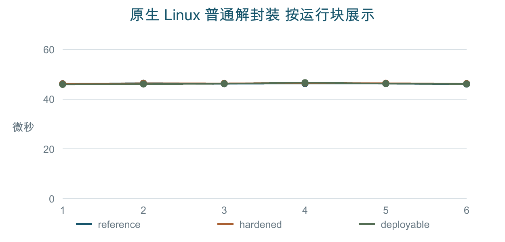
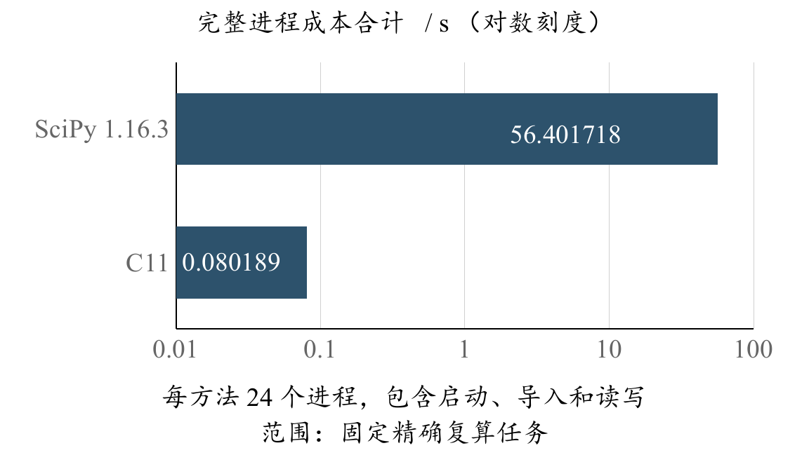

工程实践 · ML-KEM-768 · C11 · 离线可复算
当前状态更新于2026-10-10。R07已有同一Linux人工机制防护前后记录，R11执行项见A03；R02/R04仍部分签收。M02补充同机数学成本重复观察，S01补充官方附件核对。G2普通参考窗口已纳入49页报告和925项匿名研究补充件；200窗来自一个进程，几何覆盖99.4948%，不是恒频、物理精度或统计认证。实际截图、审批签署及回执仍缺，完整目标未签收。
本页读取已有结果。各条目的数据日期、来源与结论范围分别标明，历史ARM、KVM、裸金属和数学成本记录不合并成一次实验。展开每项可查看原数据、版本、日志、退出、成本与方法。
已完成原生执行的软件封存件完整资料链v3匿名包已按同一成品在Linux新目录验收：GCC与Clang动态各34项、五类复算一致。2026-10-08授权代理重跑见A03并计入R11；同日R07另有实际防护前后记录。截图与审批签署仍缺，v3原账本保持。
49页报告 · 925项G2研究补充件 · 完整文字索引 · R01–R12当前状态 · 支撑包、摘要与解压入口
本轮资料审阅，不等于漏洞复现
| 对应要求 | R05/R06/R10；支撑实施依据与版本判断。 |
|---|---|
| 结论与范围 | 有范围的公开检索，漏洞、一般缺陷、预防性加固、证明覆盖和使用限制分别记录。 |
| 公开依据及适用性 | 逐条原链接、维护者确认、发布/修复/查阅日期与未知条件；无法读取的页面记访问限制。 |
| 源码、构建与产物 | 固定b3ba7b32773e657dd37f6f87bce82528459ad8a4、ML-KEM-768便携C；固定库/标准/许可证；当前版本审查；上游main不能回填固定版本。 |
| 机器、时间与执行者 | 资料审阅日期2026-10-07；执行者为作者代理。文献不是实际工程运行。 |
| 原数据、日志与退出 | 集中检索记录；无新增密码计时或攻击原数据。 |
| 分析与复算入口 | 回到公告、已关闭Issue/合并PR和更正核实；每条线索接D01适用性，不整理触发载荷/利用脚本。 |
| 当前证据缺口 | 公开检索不证明找全问题；访问限制与未确认条件保留。 |
当前配置判断，不等于完整安全效果
| 对应要求 | R01/R05/R06/R10；编译与测量前提关联R02。 |
|---|---|
| 结论与范围 | 接口、隐式拒绝、比较/选择、屏障、后端、随机源失败、日志/错误、清理及证明覆盖分类审查。 |
| 公开依据及适用性 | A–E适用性结论、代码依据及问题分类；公开原来源。未证明安全不等于确认漏洞。 |
| 源码、构建与产物 | 固定库/标准/许可证；当前版本审查；实际封装；便携配置；CMake配置；实际链接/摘要见N01。 |
| 机器、时间与执行者 | 本轮作者代理代码审阅；本地审查与真实Linux产物核验分开。 |
| 原数据、日志与退出 | 实际修复/预防性加固与检查范围；没有降级依赖或移除防护构造展示。 |
| 分析与复算入口 | 必要修复用新提交，独立向量、接口、随机源失败及适用动态检查见N01；原件保留。 |
| 当前证据缺口 | 局部代码/产物检查不推出全库恒时。H01是历史ARM案例；同一Linux上的实际前后比较另见R07，仍限该人工机制。 |
9000条普通参考记录
| 对应要求 | R01/R02/R03/R09。 |
|---|---|
| 结论与范围 | 三次各3000普通记录、功能和动态检查；既有原生前置，非本轮新增。 |
| 公开依据及适用性 | 固定库/标准/许可证；当前版本审查；未改便携参考，人工机制材料不混入。 |
| 源码、构建与产物 | 固定9d9554b；实际编译命令；二进制摘要。 |
| 机器、时间与执行者 | Ubuntu24.04.4/x86_64、4vCPU KVM，作者代理；环境；资源/控制限制。原时点见meta/外部日志，未记录的采集起止不补造。 |
| 原数据、日志与退出 | 原CSV；meta；阶段成本；逐步退出；全部三次摘要。 |
| 分析与复算入口 | 原描述报告；audit inspect 原CSV 新描述.report。 |
| 当前证据缺口 | 宿主频率/调度不可控；前置不证明防护、裸金属或192个可用核心。 |
6块×3形态；54000正式记录
| 对应要求 | R02/R08/R09；普通负载开销与分位数。 |
|---|---|
| 结论与范围 | 18次各3000正式+100预热；掩码对照均值差+101.959333333ns，正常优化−30.100666667ns；两个99%探索区间跨零。 |
| 公开依据及适用性 | 固定库/标准/许可证；当前版本审查；三种普通无分支形态，未采人工回归，不与旧ARM时间拼接防护前后。 |
| 源码、构建与产物 | 固定0e8be6df6a0aafeb465f848dcd963505142fa96f；GCC13.3/O2/非sanitizer；编译命令；产物身份；真实反汇编。 |
| 机器、时间与执行者 | Ubuntu24.04.4/x86_64、4vCPU KVM、外部CPU2亲和性，作者代理；外部采集日志。宿主频率/调度不可控；原时点保持，不补填记录。 |
| 原数据、日志与退出 | 18次账本/退出；参考原CSV；meta；成本；全部18套摘要；普通长尾保留。 |
| 分析与复算入口 | 全部均值/P50/P90/P99/区间/成本；audit performance-replay docs/evidence/native-final-20261007/performance 新报告；方法与窗口。 |
| 当前证据缺口 | 6对iid未证明，区间只探索；优化形态差别不全部归于防护代价，不判显著加速或安全有效。 |
每格直接打开CSV、meta、阶段cost和日志；6块×3形态，各3000正式+100预热，不将单次调用当独立运行。
全部均值/分位数/区间/成本主报告；18次退出/父进程成本账本；实际环境/产物身份。
| 块 | reference | hardened | deployable |
|---|---|---|---|
| 1 | CSV / meta / cost / 日志 | CSV / meta / cost / 日志 | CSV / meta / cost / 日志 |
| 2 | CSV / meta / cost / 日志 | CSV / meta / cost / 日志 | CSV / meta / cost / 日志 |
| 3 | CSV / meta / cost / 日志 | CSV / meta / cost / 日志 | CSV / meta / cost / 日志 |
| 4 | CSV / meta / cost / 日志 | CSV / meta / cost / 日志 | CSV / meta / cost / 日志 |
| 5 | CSV / meta / cost / 日志 | CSV / meta / cost / 日志 | CSV / meta / cost / 日志 |
| 6 | CSV / meta / cost / 日志 | CSV / meta / cost / 日志 | CSV / meta / cost / 日志 |
正面观察、H1失败与残差并列
| 对应要求 | R04/R05/R06/R07/R10；本地白盒人工消息编码回归。 |
|---|---|
| 结论与范围 | 单次族回归6/10显著、掩码0/10；后续H1仅4/5显著；H2回归5/5显著，掩码4/5未检出、1/5残差显著。仅展示单次正面结果不足。 |
| 公开依据及适用性 | 历史来源和旧Kyber/FIPS203边界；本轮资料审计与R07清单；上游目标原已无分支，是人工案例，非新部署漏洞。 |
| 源码、构建与产物 | 单次源e8f55e763dbec41801a8d7c1e9fd4e10477ee816，多种子268bab838d5cf8a4b0c9c8b6f5f8b144557de219；单次产物摘要；多种子产物摘要；实际编译命令。 |
| 机器、时间与执行者 | Apple M5/ARM64、Darwin25.6.0、Clang21，1000ns标称分辨率，无亲和性/频率控制；作者代理。meta只有整批保存Unix秒，实际采集起止UTC及全部历史逐步退出不齐。 |
| 原数据、日志与退出 | 回归原CSV；掩码原CSV；残差原CSV；残差meta；功能日志；全原材料摘要；历史成本/尝试缺失保留。 |
| 分析与复算入口 | 单次回归报告；掩码报告；H1失败报告；H2残差报告；全部20运行表；audit replay只读重建40报告。残差p=1.42602e-05，优势概率effect_size_first_greater=0.488950，非Cliff差。 |
| 当前证据缺口 | R07可接受材料与具体缺口；相同顺序不证明微状态相同，重复密文不自动独立，并列修正不处理序列依赖；不显著不是恒时证明。 |
H01单次历史分布摘要，直接读取原报告category字段，不新增统计计算或合成曲线；两份各25000记录/每类5000，ns单位、1000ns标称分辨率。恒定消息两类各反复一个密文，次数不是独立密文数；普通长尾保留。源e8f55e763dbec41801a8d7c1e9fd4e10477ee816，Apple M5/ARM64。此表不能替代后续H1失败与掩码残差，也不关闭R07。
| 历史形态 | 输入类别 | 记录数 | 中位数ns | P99 ns | 均值ns |
|---|---|---|---|---|---|
| 人工回归 | valid | 5000 | 15000 | 19000 | 15369.400 |
| 人工回归 | bit-flipped | 5000 | 15000 | 20000 | 15405.200 |
| 人工回归 | random | 5000 | 15000 | 20000 | 15355.200 |
| 人工回归 | message-zero | 5000 | 14000 | 19000 | 14581.000 |
| 人工回归 | message-ones | 5000 | 14000 | 19000 | 14665.200 |
| 掩码对照 | valid | 5000 | 14000 | 20000 | 14547.000 |
| 掩码对照 | bit-flipped | 5000 | 14000 | 20000 | 14537.000 |
| 掩码对照 | random | 5000 | 14000 | 20000 | 14550.400 |
| 掩码对照 | message-zero | 5000 | 14000 | 20000 | 14531.400 |
| 掩码对照 | message-ones | 5000 | 14000 | 20000 | 14552.400 |
8任务48进程；尾计数一致
| 对应要求 | R04/R11/R12；统计检测与复现环节的专用复算成本。 |
|---|---|
| 结论与范围 | 相同完整2^20交换、输入、统计量及整数尾计数；完整进程比值中位数0.001388504，仅固定任务流程效率。 |
| 公开依据及适用性 | SciPy强对照、条件与合同；Gray更新及随机化数学是既有方法。 |
| 源码、构建与产物 | 功能62674a0、冻结39e7e3e之后确认；源码/真实程序摘要；冻结清单；SciPy1.16.3/NumPy2.3.5、vectorized、batch4096。 |
| 机器、时间与执行者 | Apple M5/ARM64 macOS、Clang21，作者代理；确认外部日志；完整研发起止未记录，不写闭合。 |
| 原数据、日志与退出 | 任务原CSV；任务计划；全8输入与计划冻结摘要；48次时间/退出/计数账本。 |
| 分析与复算入口 | 原确认主报告；audit analyze-pairs 任务.csv 任务.plan 新报告。每方法3次变化不是总体置信区间。 |
| 当前证据缺口 | 不支持ML-KEM/纯内核加速、真实误报/检出优势或防护有效。R12只按这段复算效率范围内签收。 |
40964份枚举；44份外部审计
| 对应要求 | R04/R11；有限统计模型与实现核验。 |
|---|---|
| 结论与范围 | 零效应26/4096、38/4096；graded/delta4低检出353/4096；共同符号盲用2/2拒绝，实际CLI4/4证据不足。合成ns非密码时间。 |
| 公开依据及适用性 | 有限人口与预算合同；不估计真实密码总体。 |
| 源码、构建与产物 | 实际C源62dbe4cfb4a8c0d8480c7271e9214f74697f8f86；源码/构建元数据；实际产物摘要；外部审计源4a82b5c。 |
| 机器、时间与执行者 | C在Ubuntu/x86_64/4vCPU KVM，SciPy核验在Apple M5，作者代理；平台不合并速度；开始UTC；结束UTC；环境。 |
| 原数据、日志与退出 | 全部原枚举行；C任务日志；阶段退出（pending是当时值）；最终核验；摘要。 |
| 分析与复算入口 | 模型主报告；44份审计报告；audit calibrate 新目录，原枚举行可逐字比较，任务时间与新源身份不要求相同。 |
| 当前证据缺口 | 有限模型无Monte Carlo误差，不代表真实密码总体；拒绝签收不是误报降零。本模型不提供真实序列依赖或秘密归因证据；防护前后比较另见R07。 |
既有8任务48次；中位比值0.001562070
| 对应要求 | R04/R11/R12；C01成本边界敏感性补充。 |
|---|---|
| 结论与范围 | 基线就绪后24窗口49.704188s，C完整24进程0.079016s；导入就绪6.559904s另列；计数相同，非新独立确认。 |
| 公开依据及适用性 | 预导入窗口合同；C仍含自身启动，不外推纯内核/密码速度。 |
| 源码、构建与产物 | 合同42206a8先冻结，源56373cbe74fea98fdaca2a3ff15bdff1a1b39aca；源身份；真实程序摘要；构建缓存。 |
| 机器、时间与执行者 | Apple M5/ARM64、10逻辑CPU、macOS26.6.2、Clang21，作者代理；环境；实际任务日志；未隔离CPU。 |
| 原数据、日志与退出 | 48次窗口/退出/计数账本；输入前摘要；输入后摘要；完整摘要；原数据仍C01八份文件。 |
| 分析与复算入口 | 预导入主报告；精确判定同C01入口；窗口复测按合同固定依赖/新目录，不反复挑更快结果。 |
| 当前证据缺口 | 两轮不能相减估导入；窗口非完整观察器端到端，完整研发成本未闭合。 |
24576枚举；24份外部审计
| 对应要求 | R04/R11；固定参考时间的条件标签模型和资格工程。 |
|---|---|
| 结论与范围 | 六块各4096标签，拒绝40/40/40/38/40/38，保留144原时间，无新密码调用；非原密文类别检验。 |
| 公开依据及适用性 | 后赋标签合同；采集后标签不能倒填为原采集随机化。 |
| 源码、构建与产物 | 合同2e00f39先冻结，正式采用ef20a33的导出；完整导出/配置身份；实际产物摘要；source_commit兼容字段是导出摘要前缀，非Git。 |
| 机器、时间与执行者 | 正式C控制Ubuntu/x86_64/4vCPU KVM；外部数值核验Apple M5；作者代理；实际环境；任务日志；E02原时间身份不改。 |
| 原数据、日志与退出 | 24576原枚举行；144原时间/序号；最终数值/输入核验；初版成本资格失败退出1；失败日志。 |
| 分析与复算入口 | 条件主报告；24份审计；audit reference-label-control docs/evidence/native-final-20261007/performance 新目录；完整摘要。 |
| 当前证据缺口 | 固定时间不要求iid，但仅后赋独立标签模型；不识别原依赖或密文关系、不补防护复测；初版失败保留。 |
旧展示R01别名，不是官方R01
| 对应要求 | R11；旧R01展示标签现映射A01，官方R01仍为功能要求。 |
|---|---|
| 结论与范围 | 固定fe68961新检出32项、40历史/普通/精确主表逐字一致；旧执行，不写成本轮重跑。 |
| 公开依据及适用性 | 复算与源身份说明；原数据分别属于H01/E02/C01，不把复算器回填为被测源。 |
| 源码、构建与产物 | 源码/执行类别；新检出日志；全部材料摘要。 |
| 机器、时间与执行者 | author_proxy_clean_checkout；原构建/平台配置；未记录的实际起止不补造。 |
| 原数据、日志与退出 | 功能日志；40报告重放；资格状态。 |
| 分析与复算入口 | 普通性能主表；精确主表；audit replay、performance-replay、analyze-pairs各用原输入/新输出。 |
| 当前证据缺口 | 这是当时的作者复算。后续新目录执行见A03。 |
GCC/Clang动态各34项；普通数据与工程身份已归档
| 对应要求 | R01/R02/R06/R08/R09/R11；工程、产物及普通负载事实。 |
|---|---|
| 结论与范围 | 真实新目录GCC34项、Clang18 ASan/UBSan34项；23主步骤及1配置交叉核对退出0。普通18运行54000正式+1800预热，均值差+380.801722222/+504.065388889ns；两探索区间跨零，与E02旧图分开。 |
| 公开依据及适用性 | 公开依据；当前配置适用性；工程通过不推出防护效果。 |
| 源码、构建与产物 | origin_git_commit=2e94648d502a5441b4f042abd8f420a91146d7b7，source_export_manifest=da42366ce5912ebd1d2d87913c17d238c9f325c6ae178456a1b8d37bca6fcba3；实际源码/产物摘要；构建选项；编译命令。 |
| 机器、时间与执行者 | 实际系统/资源/限制；Ubuntu24.04.4/x86_64/KVM、4vCPU、7993503744B RAM，作者代理、授权SSH。主要运行2026-10-07T16:18:45Z–16:19:13Z，配置交叉核对16:22:32Z；普通采集16:19:07Z–11Z，KVM不是裸金属。 |
| 原数据、日志与退出 | 命令/UTC/退出账本；普通检查；动态检查；普通原CSV；meta；成本。 |
| 分析与复算入口 | 本轮普通性能主表；实际执行命令记录；与旧E02分别保存。 |
| 当前证据缺口 | 宿主频率/调度不可控，6对iid未证明，普通性能只是探索；源码不含其后帮助与展示改动，新包另有源身份；无新时序触发/利用/恢复。 |
每格直接打开CSV、meta、阶段cost和日志；6块×3形态，各3000正式+100预热，不将单次调用当独立运行。
全部均值/分位数/区间/成本主报告；18次退出/父进程成本账本；实际环境/产物身份。
| 块 | reference | hardened | deployable |
|---|---|---|---|
| 1 | CSV / meta / cost / 日志 | CSV / meta / cost / 日志 | CSV / meta / cost / 日志 |
| 2 | CSV / meta / cost / 日志 | CSV / meta / cost / 日志 | CSV / meta / cost / 日志 |
| 3 | CSV / meta / cost / 日志 | CSV / meta / cost / 日志 | CSV / meta / cost / 日志 |
| 4 | CSV / meta / cost / 日志 | CSV / meta / cost / 日志 | CSV / meta / cost / 日志 |
| 5 | CSV / meta / cost / 日志 | CSV / meta / cost / 日志 | CSV / meta / cost / 日志 |
| 6 | CSV / meta / cost / 日志 | CSV / meta / cost / 日志 | CSV / meta / cost / 日志 |
40报告与四类主结果逐字一致；作者代理
| 对应要求 | R04/R08/R11；原数据可复算性。 |
|---|---|
| 结论与范围 | 40历史报告、E02旧普通主表及精确主表逐字一致；40964有限模型、24576后标签原枚举行及144原时间逐字一致。只复算旧材料，非新独立确认。 |
| 公开依据及适用性 | 原方法与入口；C02合成、C04后标签、E02普通用途不改。 |
| 源码、构建与产物 | 本轮源码/产物；N01完整输入清单；原被测身份由对应旧条目保留，复算器不替代它。 |
| 机器、时间与执行者 | Linux环境；真实起止/退出；作者代理。 |
| 原数据、日志与退出 | 本轮逐项数量/字节匹配核验；本轮匹配状态；有限模型原行重建；后标签原行重建；144时间重建。 |
| 分析与复算入口 | 旧普通主表复算；精确主表复算；历史H2一份复算；只读旧资料。 |
| 当前证据缺口 | 成功只支持已列旧材料可复算，不补独立人员、真实防护效果或总体模型；后续新包的干净验收另记录。 |
26步退出0；计入R11
| 对应要求 | R11。评测人员可按同一封存包复现。 |
|---|---|
| 结论与范围 | 包58d6a604、源清单601a1020共206项。历史、普通性能、精确、40964模型、24576后赋标签和144个原时间与封存原件逐字节一致。60条短演示只验证入口。 |
| 公开依据及适用性 | 使用入口。复算成功不写成防护效果。 |
| 源码、构建与产物 | 版本；产物；执行脚本。 |
| 机器、时间与执行者 | Ubuntu 24.04.4 / x86_64 / KVM / 4 vCPU，预检。2026-10-08T03:22:50Z–03:23:18Z。所有者授权的代理。 |
| 原数据、日志与退出 | 26步账本；GCC 34项；Clang动态34项；短演示CSV。 |
| 分析与复算入口 | 执行记录；说明。 |
| 当前证据缺口 | A03运行当时的result.meta保持。该次封存包重跑不包含R07采集或界面截图；R07另有同日记录。 |
执行记录见A03。截图与审批签署仍缺
| 对应要求 | R11项目附加条件及提交材料。 |
|---|---|
| 结论与范围 | 所有者授权的固定包执行见A03并计入R11。实际界面截图和审批签署没有新材料。 |
| 公开依据及适用性 | 官方基础/项目附加尺度；既有访问拒绝及完成性审计。 |
| 源码、构建与产物 | 执行记录与A03使用同一封存包。截图不改变产物身份。 |
| 机器、时间与执行者 | 执行窗口和平台见A03。审批签署仍由所有者本人处理，本次没有代写意见或盖章。 |
| 原数据、日志与退出 | 演示与实际截图操作说明；真人需保存日志、命令、UTC/退出及原截图。当前没有合格截图或签署，不链接假材料。 |
| 分析与复算入口 | 本人从新目录构建、功能检查与封存复算；现场普通60条只验证入口，封存图标数据图。 |
| 当前证据缺口 | 不绘制假终端。编号已另有CACR2026EA16XZ报告；贡献、签名、意见、盖章及提交回执仍由所有者完成。 |
五个预定种子全部执行；功能37项通过；范围内签收
| 对应要求 | R05/R06/R07/R08/R09；R02/R04仍部分签收。 |
|---|---|
| 结论与范围 | 人工消息分支的五次预定主比较均显著，掩码、参考及正常优化对照均未检出；只解释该人工机制，不证明全库恒时。 |
| 计划及方法 | 原采集前计划；恒定消息两类为重复密文，旧ARM残差另存。 |
| 源码与产物 | 固定源码、同构建功能和计时条件；正式GCC 13.3、RelWithDebInfo、动态检查关闭。 |
| 机器与时点 | Ubuntu 24.04.4/x86_64/KVM/4vCPU，2026-10-08T03:49:52Z至03:50:41Z；宿主频率未配置。 |
| 原值与退出 | 原CSV、meta、报告与63步退出记录；全部退出0，原值和长尾保持。 |
| 分析入口 | 五种子结果及性能边界；与H01历史ARM观察分别解释。 |
| 未闭合项 | 不支持新上游漏洞、密钥恢复或全库恒时；频率、真实总体统计条件及人员签收另需证据。 |
18/18非零中位比小于1；240/240时钟合格；零重试
| 对应要求 | R12固定精确复算效率；不升级R02/R04真实总体结论。 |
|---|---|
| 结论与范围 | 一次干净重建、同机三个顺序新进程，六份固定非零输入重复观察到较低中位成本；八任务含3/7相同全零CSV。 |
| 合同及方法 | 启动前冻结合同；同语言完整函数成本，允许自然向量化，不合并原M01。 |
| 源码与产物 | 新bc61产物独立资格；C11、Apple Clang 21、-O2、无LTO。 |
| 机器与时点 | Apple M5、macOS/ARM，2026-10-09本地；采样为AC供电，未设置频率、绑核或后台隔离。 |
| 原值与退出 | 三次新进程完成记录；进程1原值 / 进程2原值 / 进程3原值；每次160正式窗口。 |
| 核验与复算 | C汇总十二位原值；独立结果判定；已有记录只读复算。 |
| 未闭合项 | 三个进程共用一次构建和同一组输入，不支持iid、跨平台、原C/SciPy因果分解、真实误报率或恒时。 |
官方工作簿已取得；两项条目已完成固定路径适用性核对
单次正常进程126528调用；全部200主窗口通过工程规则；R02/R04仍部分签收
| 对象与机器 | 2026-10-10，Ryzen 9 9950X、Ubuntu 24.04.4、真实x86_64裸金属；固定普通reference产物，八个有效密文循环，CPU2工作、CPU18仅上下文。 |
|---|---|
| 主张范围 | 200个相邻反馈快照pair来自一个进程，不是200次独立重复。199个纯主支持区间的几何覆盖为3981985286/4002203951ns=99.4948%；首跨界仍参与工程判断。 |
| 合同与结果 | 事前合同 · 实际结果 · 结果到主张。 |
| 原值与核对 | 原件、C输出与生命周期 · 全量整数独立核对。保存251快照、1977检查点和126528逐调用值；主阶段101248次。 |
| 取消与恢复 | 另一路径在放行后约0.255407秒发起注册取消，该数不是恢复耗时；0字节输出保持测量未知。结束六原PID不存在、32策略/global可见等基线、CPU0—31归还、隔离空、自有组删除、锁释放。 |
| 报告与复算 | 49页报告5.9 · 925项实包。实际ZIP提取G2-A仅在Mac/ARM离线C11重建，唯一CTest通过、两组四输出逐字一致；没有新增密码或硬件采集。 |
| 解释边界 | 读取对齐区间不是置信区间或完整物理误差界；几何覆盖不证明逐时／逐调用恒频。可见恢复读回不是全程原子快照，不认证隐藏QoS或guard自身死亡后的恢复。 |
| 仍需证据 | 适用目标差异量级的读钟精度、稳定性及统计前提；旧KVM可信身份核查迁移、真实运行画面和本人签章。完整目标未完成。 |

E02普通数据图，非零纵轴，全部18均值来自原C报告；两探索区间跨零，长尾保留，6对iid未证明。不是防护效果图或界面截图。

C01/C03成本数据图，对数坐标；就绪成本另列，C仍含启动。限定统计复算效率，非ML-KEM加速。原生可编辑PPT/工作簿。
cmake --preset baseline cmake --build --preset baseline --parallel 4 build/cmake/audit version build/cmake/audit check build/cmake/audit replay "$PWD" "$PWD/runs/new-history" build/cmake/audit performance-replay docs/evidence/native-final-20261007/performance runs/new-performance.report
输出须新建。功能和只读封存复算按各自源身份解释；数据不完整或证据不足不能显示完整签收。完整入口及方法 · 现场/封存演示与人工截图 · 执行记录 · R07可接受材料。